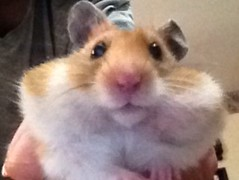
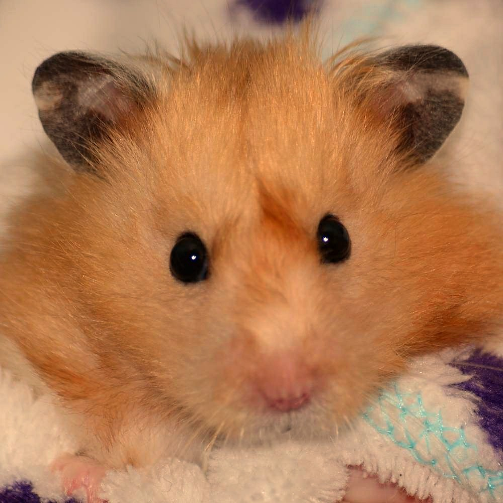
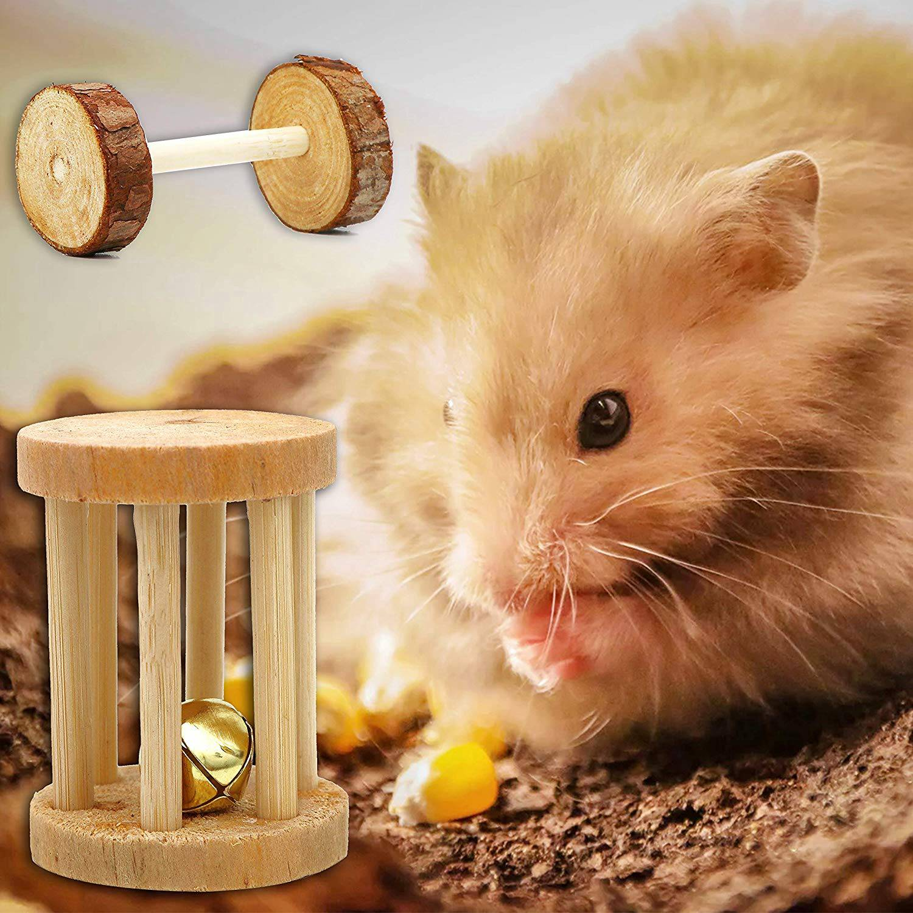
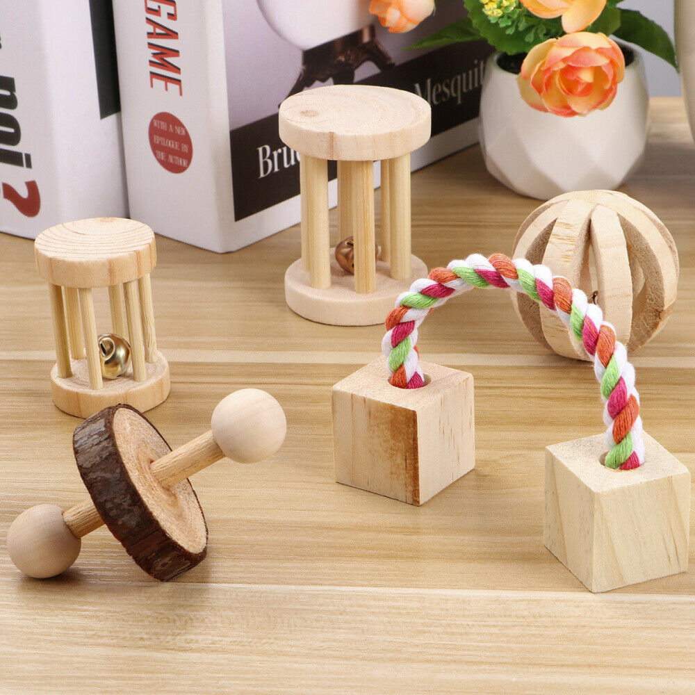

About
Long hair syrian hamsters are known to be solitary and nocturnal hamsters. They do not like other hamsters but like their owners, as long as their treated kindly. They are born blind and with teeth, once they reach adulthood they are able to see no more than a few inches away. Syrian hamsters can run long distances as far as 5 to 8 miles a day. Proper Hamster care also includes exercise, which means they should be given the opportunity to run around outside the cage each day, as long as they are supervised.
 Cages
Hamsters are amazing escape artist. They must be houssed in secure, locked cages with bar spacing or large bins with openings for oxygen. The smallest size cage must be 450 square inches or bigger, anything smaller can cause stress and depression to the hamster. Hamsters like to climb, bury, dig, and hide, so providing them a multilevel cage with hide boxes, wheels and tubes is ideal. You can buy a big cage from a pet shop or DIY your own.

ChewToys
Hamsters teeth never stop growing and require chew toys to file down their teeth. Hamsters are born with teeth and if not filed down it can make it very diffucult for the hamster to eat. Hamsters that are not offered enriching toys will often chew on their own hair or skin, gnaw on cage bars and break teeth, or overheat from boredom. You can find chew toys in pet stores and online.
 SandBath
A sand bath is quite different to the regular sort of bath we might give our other pets. Hamsters take sand baths not water baths. The water takes away their natural oils and ruins the coat. Pour sand into a container that is large enough for your hamster to get in and out of, and roll around in. If you do not have a sand bath for your hamster, you can use unscented baby wipes to clean their paws.